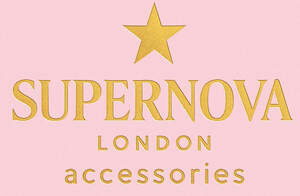

Trade Mark Journal No.2025/052 26 December 2025
UK00004309795 12 December 2025 (35)

- Class 35
- Brand positioning; Brand testing; Brand strategy services; Brand positioning services; Advertising services to create corporate and brand identity; Brand creation services; Advertising services to create brand identity for others; Brand creation services (advertising and promotion); Brand evaluation services; Product marketing; Product merchandising; Product launches; Influencer marketing; Product merchandising for others; Direct mail advertising to attract new customers and to maintain the existing customer base; Developing promotional campaigns for business; Design of advertising logos; Product launch services; Business research for new businesses; Marketing; Marketing research in the fields of cosmetics, perfumery and beauty products; Advertising services relating to the commercialization of new products; Providing consumer product recommendations; Advertising and marketing; Promotion [advertising] of business; Organisation of customer loyalty programs for commercial, promotional or advertising purposes; Market campaigns; Business management for a trade company and for a service company; Online retail store services relating to cosmetic and beauty products; Providing consumer product advice; Providing consumer product advice relating to cosmetics; Digital marketing; Developing promotional campaigns for businesses; Trade marketing [other than selling]; Promotional marketing; Online marketing; Advertising and marketing consultancy; Business marketing consultancy; Direct market advertising; Providing consumer product information relating to cosmetics; Business management of an airline company; Online retail store services in relation to clothing; Retail services in relation to fashion accessories; Advice concerning chemical product marketing; Providing consumer product information relating to food or drink products; Retail services in relation to pet products; Advertising, marketing and promotion services; Marketing, advertising and promotion services; Providing consumer product information; Market research services regarding customer loyalty; Promotion, advertising and marketing of on-line websites; Arranging of product launches; Business management of wholesale and retail outlets; Sales promotion through customer loyalty programs; Product sales information; Business management of retail outlets; Retail services connected with the sale of clothing and clothing accessories; Affiliate marketing; Providing market information in relation to consumer products; Advertising, marketing and promotional services; Advertising, promotional and marketing services; Marketing, advertising, and promotional services; Marketing through product placement for others in virtual environments; Retail services in relation to bakery products; Consultancy relating to the organisation of promotional campaigns for business; Modelling and models for advertising or sales promotion; Business promotion; Promotion of goods through influencers; Organisation and management of customer loyalty programs; Customer loyalty services for commercial, promotional and/or advertising purposes; Retail services in relation to clothing accessories; Direct marketing; Business marketing services; Development of marketing concepts; Retail services in relation to car accessories; Retail store services in the field of clothing.
London Tote Company Ltd